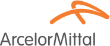

Ranglister Råvarer & uran ArcelorMittal

ArcelorMittal
64
15070100
Et blik på de samme fund, ikke en ny score. Sådan virker det
En god forretning med et reelt spørgsmålstegn: prisen, en revne eller begge dele.
Største fradrag
- Multipler mod egen historik−12
- Margin−6
- ROIC−5
Styrker
- Vækstprojekter+2
- Prisstyrke+1
Sådan er scoren bygget op
Fra 100 til 64, trin for trin: point trækkes fra for forretningen, prisen og revnerne, lægges til for dokumenterede styrker, og så følger tre datajusteringer.
Start
Score
Hold musen over et trin eller vælg det for at se, hvad der drev det. Trin med fund åbner dem nedenfor.
Nøgletal
Pr. 6 nov. 2026. Analytikernes kursmål er ofte optimistiske; læs opsiden som et fingerpeg, ikke en prognose.
- Pris
- 54.82 EUR
- Analytikernes mediankursmål
- 70.72 EUR
- Opside til median
- +29.0%
- Analytikere
- 14
- Kursmålsinterval
- 54.37 – 80.54 EUR
- 52-ugers ændring
- +69%
- P/E (historisk)
- 45.6
- Forward P/E
- 9.8
- PEG
- 0.33
Fund
Hvert fradrag og hvert plus med sin kilde. Åbn et trin for at læse dem.
Forretning
Bliver virksomheden stærkere, ikke bare større? · 4 fund−16 af −30
- −6MarginDriftsmargin 4,1 %, bruttomargin 9,0 % og nettomargin 2,9 % (TTM); driftsmarginen var kun 2,7 % i 2025 mod 14,6–21,7 % i højkonjunkturen 2021–22.
- −5ROICROIC 3,5 % (TTM) og 2,5–4,4 % i 2023–2025 mod en WACC på 11,8 % – kapitalen forrentes langt under kapitalomkostningen uden for toppen af cyklussen.
- −3Vækstens kvalitetOmsætningen er faldet fra 79,8 mia. USD (2022) til 62,8 mia. USD (TTM). Løftet i 2026 i Europa (EBITDA/t 98 USD, tre-års-højde) kommer primært fra EU's nye toldkvoter (TRQ) og CBAM fra 1/7, ikke fra øget konkurrenceevne.
- −2KapitalallokeringTilbagekøb og udbytte for 922 mio. USD (TTM) og 700 mio. USD i H1 2026, mens FCF var −159 mio. USD (TTM) og −1,49 mia. USD i H1; udlodningen finansieres i praksis med stigende gæld under et capex-program på 4,5–5,0 mia. USD.
Pris
Dagens multipler mod selskabets egen historik og dets sammenlignelige selskaber. · 1 fund−12 af −35
- −12Multipler mod egen historikForward P/E 10,9 mod 2,6–10,8 i 2021–25 (over hele intervallet); P/B 0,91 og P/TBV 1,04 mod 0,36–0,62 og 0,41–0,71 (langt over intervallet); EV/EBITDA 9,7 mod 1,8–10,6. Kursen er +92 % på 52 uger, så meget af toldbeskyttelsens gevinst er prissat.
Revner
Cash flow, kunder, gæld, insidere, guidance og det, der ligger bag hovedtallene. · 4 fund−12 af −35
- −4Regulering (afhængighed af told)Indtjeningsløftet i Europa hviler på EU's toldkvote-værktøj og CBAM; ledelsen venter 'yderligere opside', når TRQ virker fuldt ud. Politisk beslutning, der kan udvandes, udfordres i WTO eller møde gengældelse.
- −3GældNettogælden steg til 9,5 mia. USD i Q2 fra 7,9 mia. ved årsskiftet og 5,2 mia. i 2024, efter en arbejdskapitalinvestering på 2,0 mia. USD i H1; rentedækning 3,6x.
- −3Makro og cyklusBarclays sænkede kursmålet fra 75 til 55 € (Hold) 25/9, og det laveste kursmål er 48,59 € (−19 %); stigende råvare- og energiomkostninger presser, og handlen med lange produkter er træg.
- −2Kontrollerende aktionærKun ca. 413 mio. af 754 mio. aktier er free float; Mittal-familien har afgørende indflydelse, mens øvrige insidere ejer 0,15 %.
Plus
Kun dokumenterede styrker. · 2 fund+3 af +15
- +2VækstprojekterOrganiske vækstprojekter (Indien, Liberia, elektrisk stål i USA og Europa, Brasilien) og gennemførte opkøb ventes at løfte EBITDA-potentialet med ca. 1,8 mia. USD fra 2026 – uændret guidance; Sustainable Solutions skal fordoble EBITDA i 2028 mod 2023.
- +1PrisstyrkeHæver varmvalsede priser i Europa med 20 €/t til ca. 790 €/t i september med fulde ordrebøger og mindre importkonkurrence.
Forbehold
Det, scoren ikke fanger, eller hvor dataene er svage.
Amsterdam-noteringen (quote/ams/MT) bruges; selskabet er også noteret i Paris, Luxembourg, Madrid og New York. Regnskab i USD, kurs i EUR. Forward P/E og estimater er justerede (non-GAAP); 2025-nettoresultatet (3,2 mia. USD) var løftet af poster uden for driften, mens driftsmarginen kun var 2,7 %. Analytikerne venter EPS +74 % i 2027 – det er formelpoint, ikke plus. Kursmålene spænder fra 48,59 til 81,67 €; Barclays sænkede til 55 € 25/9, mens flere andre kursmål ikke er opdateret efter faldet fra ca. 63 til 60 €. Status for de europæiske DRI-/dekarboniseringsprojekter og CO2-kvoteomkostninger er ikke undersøgt. Mittal-familiens præcise ejerandel er ikke verificeret (free float ca. 55 % ifølge stockanalysis).
Også i Råvarer & uran
De højeste scorer i samme branche.